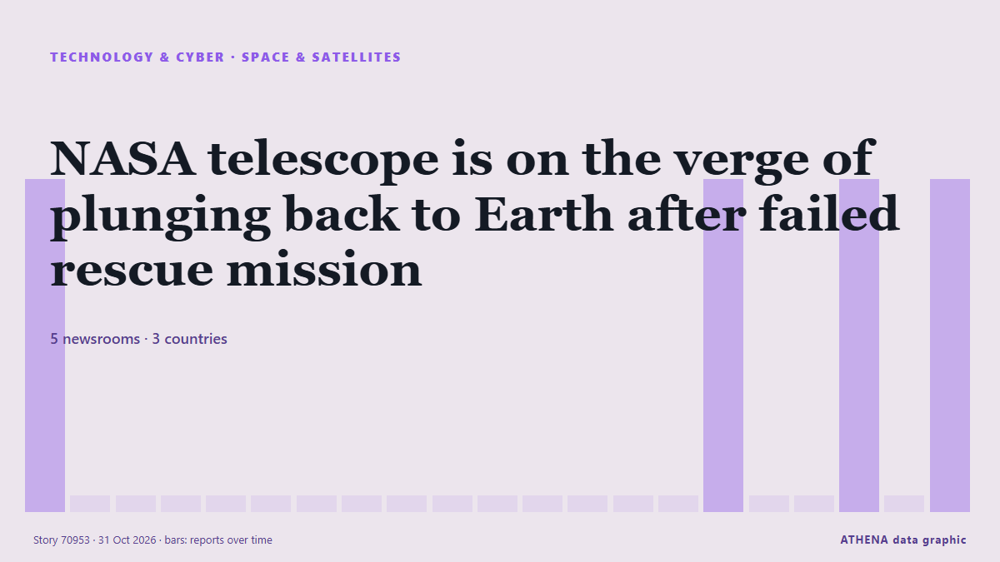

Technology, AI & Cybersecurity

Space & satellitesNASA telescope is on the verge of plunging back to Earth after failed rescue mission
CAPE CANAVERAL, Fla. (AP) — An aging NASA telescope is barely clinging to space after a failed rescue effort left it tottering lower and lower. from The Canadian Press (via CityNews)
| 18 Oct | 7 |
|---|---|
| 19 Oct | 34 |
| 20 Oct | 15 |
| 21 Oct | 31 |
| 22 Oct | 57 |
| 23 Oct | 55 |
| 24 Oct | 21 |
| 25 Oct | 26 |
| 26 Oct | 77 |
| 27 Oct | 82 |
| 28 Oct | 85 |
| 29 Oct | 83 |
| 30 Oct | 72 |
| 31 Oct | 17 |
Jack Grealish in 'breach of club discipline' as David Moyes responds to Everton decision
Former Aston Villa skipper Jack Grealish was left out of Everton's squad for their match against Newcastle. from Birmingham Mail
Nintendo Switch Sports Resort now under £27 days after launch as gamers left 'in awe'
"A big benefit of this game of course remains the physicality of the rivalry between household members.” from Birmingham Mail
Malicious Claude Code extension on Cursor planted SSH backdoors
A malicious version of Anthropic's Claude Code VS Code extension was distributed through Cursor's extension marketplace for approximately 11 hours on October 29, exposing up to 5,000 developers to… from BleepingComputer
Japan’s FM urges Russia to release journalist detained on Sakhalin
Japanese Foreign Minister Toshimitsu Motegi on Friday urged Moscow to immediately release a Japanese journalist detained on suspicion of espionage and take steps to achieve a just and lasting peace… from Ukrinform (English)
Azerbaijan, Kazakhstan seek to expand cooperation in logistics and AI
Azerbaijan and Kazakhstan are exploring new opportunities to strengthen economic cooperation in logistics, information technology, advanced technologies and artificial intelligence. from AzerNews
ClassNK Unveils Enhanced Cybersecurity Guidelines for Maritime Safety
ClassNK has launched its second edition of Cyber Security Management System Guidelines to bolster ship cybersecurity and ensure compliance. from SeaNews Türkiye
Intel on course for worst day ever, triggers global chip rout
A two-week shutdown of Intel's Fab 28 in Israel will affect server CPU shipments for two consecutive quarters. from Tom's Hardware
Tasnim News Agency’s reporter freed after 450 days in Israeli detention
Tehran, IRNA — Farah Abu Ayyash, a Tasnim News Agency correspondent in the West Bank, returned to her family on Thursday night after spending 450 days in the prisons of the Israeli regime. from IRNA (English)
Cloudflare Reports 18.2 Million Network-Layer DDoS Attacks in Q3, Up 38%
Threat actors are launching about 8,226 network-layer distributed denial-of-service (DDoS) attacks per hour, Cloudflare revealed Thursday. from The Hacker News
Kremlin pressure: Independent Russian newspaper Novaya Gazeta shuts
Novaya Gazeta will be evicted from its office on Potapovsky Lane in central Moscow, where it has been based for 29 years, the news outlet Ekho reported. from Meduza (English)
Dartmouth provost resigns over AI use in published articles
Dartmouth College Provost Santiago Schnell resigned Wednesday after a faculty-led investigation concluded he used artificial intelligence (AI) to substantially alter his published writing, violating… from VnExpress International
Webinar: Navigating the danger zone: How to protect your fleet from GPS attacks
Jamming and spoofing attacks are rising fast across busy waterways, putting crews, cargo and insurance claims at risk. from Seatrade Maritime
Meta, TikTok, X lose legal challenge against UK watchdog over online safety data demands
2023 law imposes tougher content standards on TikTok, X and Meta to protect children online. from Express Tribune
Intel’s Q3 Results Show Supply Chain Disruptions and PC Plunge
Intel faces a tough challenge as manufacturing bottlenecks and rising memory costs impact PC sales despite strong data center growth. from EE Times
Canadian astronaut Joshua Kutryk successfully completes first of two spacewalks
Kutryk, who returned to the ISS after more than seven hours, is the fifth Canadian to perform a spacewalk. from The Globe and Mail
Cash is king as investors draw new battle lines in AI spending boom
Microsoft shares rose more than 3% in after-hours trading, while Alphabet plunged nearly 10%, as investors favoured companies profiting from AI over those struggling to contain its costs. from Free Malaysia Today
Finland launches criminal probe into land clearance for Google data centre
The investigation is expected to be complete at some point next year. from Yle News (alternative feed)
Reddit will make users log in as Google’s AI search cuts its traffic
Reddit is moving to a “logged-in-only experience”, chief executive Steve Huffman told shareholders on Thursday. from The Next Web
NASA Revives Apollo-Era Urgency to Build Moon Station for Astronauts
NASA is accelerating its return to the Moon, targeting a crewed lunar landing in 2028 and committing approximately US$20 billion to a program designed to establish a lasting human presence on the… from Colombia One
Elon Musk is ‘truly a genius,’ says Vladimir Putin
Putin said that he and Musk are in "close contact" about Rassvet, Russia's Starlink-like satellite connectivity project. from TechCrunch
Apple launches first touchscreen MacBook Pro with prices expected to exceed R60k in SA
Apple has officially launched its long-awaited touchscreen MacBook Pro lineup featuring M5 Pro and M5 Max chips, an Ultra Retina XDR display, and up to 24 hours of battery life. from IOL
China rejects report alleging executive with ties to Nvidia CEO worked for Beijing
New York Times claims Trump was briefed on alleged intelligence activity but took no action. from Anadolu Agency (English)
Turkish Cypriot president pledges close cooperation with Türkiye on Cyprus settlement
Erhurman says international integration of Turkish Cypriots and efforts to resolve island's dispute are mutually reinforcing. from Anadolu Agency (English)
HHTD 26: Foxconn Chairman highlights processing and vertical integration strengths
Foxconn Chairman Young Liu said at the opening of Hon Hai Tech Day 2026 (HHTD26) on October 30 that the company's core competitive strengths lie in its "processing capabilities" and "vertical… from DigiTimes Asia
Honda targets Level 4 autonomy by 2027, AI maps by 2030
Honda Motor plans to achieve Level 4 autonomous driving around 2027 and replace high-definition maps with AI technology around 2030, enabling Level 4 vehicles to navigate the narrow roads and… from DigiTimes Asia
US plans to ban Chinese telecom firms from direct access to US phone numbers
The United States plans to ban Chinese telecom firms from direct access to US phone numbers soon on national security grounds—a measure designed to prevent scam-related robocalls. from MyJoyOnline
Today in Denmark: A roundup of the latest news on Friday
New fees on non-EU parcels from next year, Denmark to take over presidency of Nordic Council and more news from Denmark on Friday. from The Local Denmark
Amazon AWS posts 39% revenue growth as cloud rivals also accelerate
Amazon's cloud signed deals with Meta and OpenAI during the quarter, helping revenue to exceed consensus. from CNBC World
Armenia justice minister: We will be ready to present new draft constitution in mid-November
ArmInfo. The text of the new Constitution of Armenia will be published in November. from Arminfo
Microsoft looks to raise at least US$25 billion from US bond sale
Wells Fargo, JPMorgan Chase and UBS are managing the offering. from The Business Times
Samsung, SK Hynix say memory crunch could drag on for years despite spending surge
Samsung Electronics and SK Hynix expect memory shortages to persist for years despite rising investment in chip factories, as surging AI demand and increasingly complex manufacturing processes limit… from DigiTimes Asia
Hogan Lovells Cadwalader Advises Intel in Pending Acquisition of Classiq Technologies
Insider Brief PRESS RELEASE — Global law firm Hogan Lovells Cadwalader advised Intel Corporation (Nasdaq: INTC) as it entered into a definitive agreement to acquire Classiq Technologies Ltd, a… from The Quantum Insider
Nvidia, Meta partner on Muse agent as Nvidia invests $3 billion
Nvidia and Meta on Tuesday said they will partner to expand their work on Meta’s Muse assistant and the Muse family of models. from Business Recorder
Leak exposes 41,000 Homeland Security staff, including ICE and CBP agents
Records on more than 41,000 employees and contractors of the US Department of Homeland Security (DHS) are now online. from The Next Web